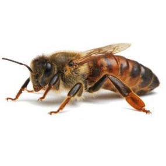
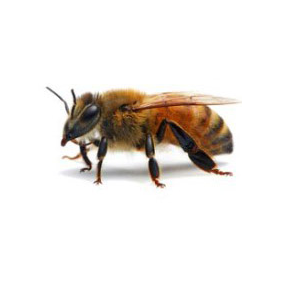
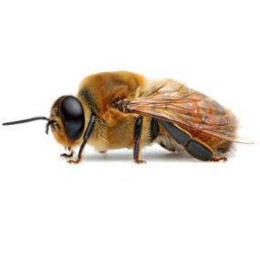

Que es la Federacion Internacional de Asociaciones de Apicultura
La Federacion Internacional de Asociaciones de Apicultura es una
organizacion mundial cuyo objetivo principal es establecer relaciones
entre las personas y asociaciones que se dedican a la apicultura. Para
dar a conocer toda la informacion divulgativa y cientifica sobre el
tema publica una revista llamada Apiacta y cada dos años organiza un
congreso llamado Apimondia siendo un encuentro entre cientificos y
apicultores que se reunen en diferentes paises de los cinco
continentes.
Mas informacion
Habitantes de una colmenta
Abeja reina

La abeja reina tiene como funcion poner huevos de los que sale el
resto de habitantes de la colmena, es de tamano mas grande que la
abeja obrera, abdomen mas alargado y con alas mas cortas. Otras de sus
funciones es la de segregar una feromona que mantiene unidos a todos
los habitantes de la colmena. La produccion de esta feromona
disminuira con la edad de la abeja, cesndo en torno a los cuatro anos.
Abejas obreras

Las abejas obreras cuentan con un gran número de efectivos en la
colmena (20.000-60.000). Una vez que la larva sale del huevo, solo
recibirán jalea real durante dos días y medio y luego será alimentada
por una masa de miel, polen y agua.
Abejas zanganos

Los zánganos nacen de un huevo sin fecundar puesto por la reina
(partenogénesis) y reciben jalea real durante tres días, después pan
de abeja como las obreras. Requieren veinticuatro días para alcanzar
el estado de adulto, pasando por tres fases: huevo (tres días), larva
(cinco días y medio) y ninfa (quince días y medio). Tienen como
función fecundar a la abeja reina y dar calor a la cría, aunque están
muchas horas en el campo y son las obreras las que mantiene la humedad
y temperatura adecuados.